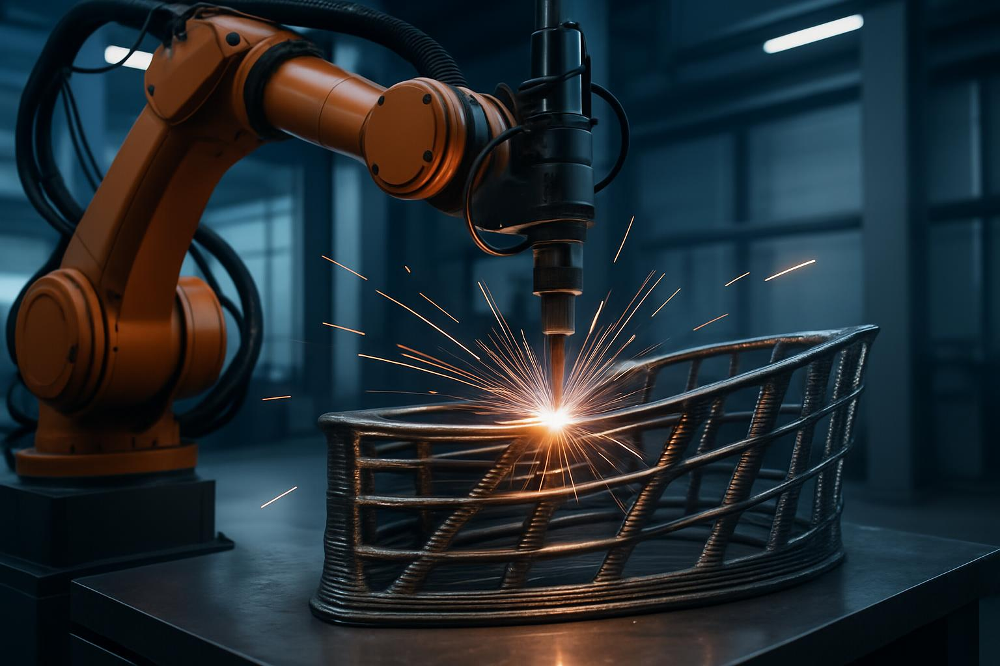
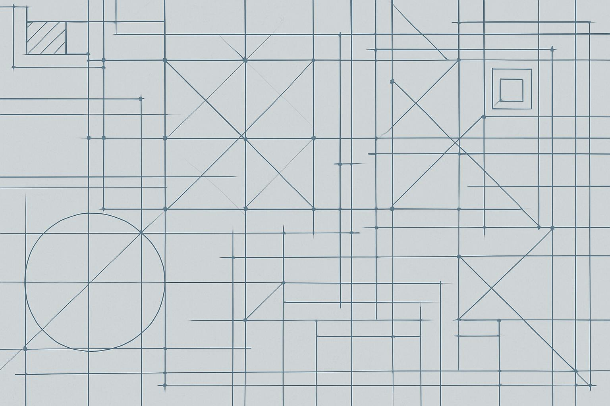

Research
Our group is dedicated to pushing the boundaries of structural engineering through a combination of rigorous mechanics, high‑fidelity computation and emerging manufacturing technologies. From steel and composite structures to machine‑learning‑driven analysis, we aim to develop methods and tools that directly impact industry practice.
Research Team
We are a diverse team of faculty, post‑doctoral researchers and graduate students working together on a range of topics. Current PhD students and their areas of research include:
- OUYANG Weihang – Second‑order analysis of pile‑supported structures accounting for soil–structure interaction (2021–Present)
- DING Yueyang – Direct analysis and design for modular structures and integrated construction (2020–Present)
- ZHANG Haoyi – Advanced analysis of constructional metallic printing steel structures with irregular cross‑sections (2021–Present)
- LI Guanhua – Second‑order analysis of constructional 3D‑printing structures with functionally graded members (2021–Present)
- GAO Wenlong – Second‑order analysis for green building structures using built‑up cold‑formed steel members with bolted interconnections (2022–Present)
- OUYANG Wenjing – Simulation‑based design of offshore steel structures considering soil–structure interactions (2023–Present)
- LIANG Anrui – Machine‑learning‑based structural design of emerging steel structures (2023–Present)
- XUE Haien – FRP–concrete composite offshore piles for durable anchoring systems (2023–Present)
- GU Zizhang – Second‑order direct analysis of nonlinear behaviour in 3D‑printed functionally graded structures (2024–Present)
- YANG Fuming – Dynamic analysis and design of 3D‑printed metal structures (2024–Present)
- ZENG Ziyi – Stability analysis and design of stainless‑steel structures with laser fusion welding methods (2024–Present)
Research Areas
Our investigations span several interconnected areas. Click on the cards below to explore individual topics.
Steel & Composite Structures
Nonlinear analysis, direct design methods and stability of steel and composite members under mechanical and thermal loads.
Constructional 3D Printing
Design and performance of Wire Arc Additive Manufactured members, functionally graded materials and full‑scale printed structures.
Computational Mechanics & AI
Machine‑learning‑enabled finite element formulations, physics‑informed neural networks and surrogate models for structural analysis.
Steel & Composite Structures
We develop advanced direct analysis methods to accurately capture the nonlinear behaviour of steel and composite structural systems. Our work includes buckling analyses of thin‑walled members, lateral‑torsional buckling of beams with warping restraints, and performance‑based design methodologies under fire and high temperatures. The outcomes have influenced international design codes and led to award‑winning applications.
Constructional 3D Printing
Our team pioneers research in Wire Arc Additive Manufacturing (WAAM) and constructional 3D printing. Projects encompass the development of analysis techniques for 3D‑printed members with irregular cross‑sections, functionally graded steel members and full‑scale demonstration projects such as the award‑winning “Waving Love” pavilion. The research extends to fabrication, heat‑affected zone modelling and integrated design workflows.
Computational Mechanics & AI
We harness machine learning and physics‑informed neural networks to enhance structural analysis. Contributions include neural‑network‑based line elements for frame analysis, physics‑informed models for soil–structure interaction and surrogate models for complex material behaviour. These methods accelerate computation while maintaining high accuracy, opening new avenues for simulation‑based design.